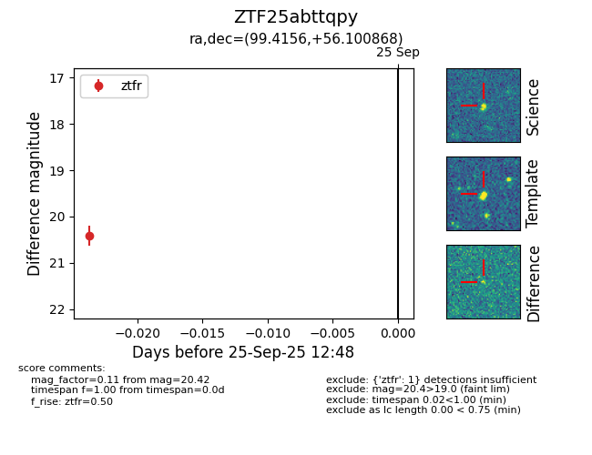

FINK: ZTF25abttqpy
Lasair: ZTF25abttqpy
ALeRCE: ZTF25abttqpy
ZTF25abttqpy (ztf,fink)
equatorial (ra, dec) = (99.4156,+56.10087)
galactic (l, b) = (159.3732,+20.40527)

last ztfr=20.42
1 ztfr detections